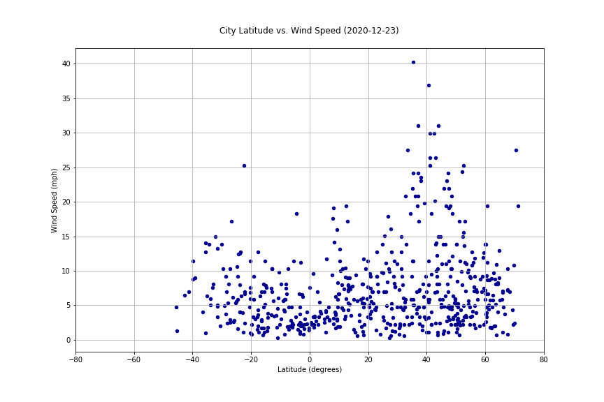

Wind Speed

The exercise also had us run plots and calculate regression lines for wind speed. These include the scatter plots City Latitude vs. Wind Speed (2020-12-23) by total earth and then for each hemisphere separately. From our measurements approximately a month ago, the regression lines suggested a gradual, slight, and possibly significant increase in average wind speed as latitude increases from the equator. The Southern Hemisphere slope was 0.6 (0.8 a month ago) while the Northern Hemisphere slope was 0.0 (0.1 a month ago), suggesting the wind speed increases at a greater rate in the Southern Hemisphere, at least during the late Fall and Early Winter in the Northern Hemisphere.
We speculate that this correlates to the season of the year, in that greater sunlight hours in the Southern Hemisphere energizes average wind speed more greatly than regions of the earth with shorter sunlight hours. It could also possibly represent the greater proportion of water surface area to land surface area in the Southern Hemisphere, with fewer mountains as a percentage of total surface area to impede or slow wind. The final observation here is that there may be evidence of the trade winds imbedded in the data. I speculate these are popping out in the outliers in slight concentrations around certain latitudes. Since the trade winds at specific latitudes tend to move either east-to-west or west-to-east, there would seem to be a slightly higher average wind speed since in other areas of the world, wind direction shifts quite a bit more, with correspondingly significant disruption to average wind speed.